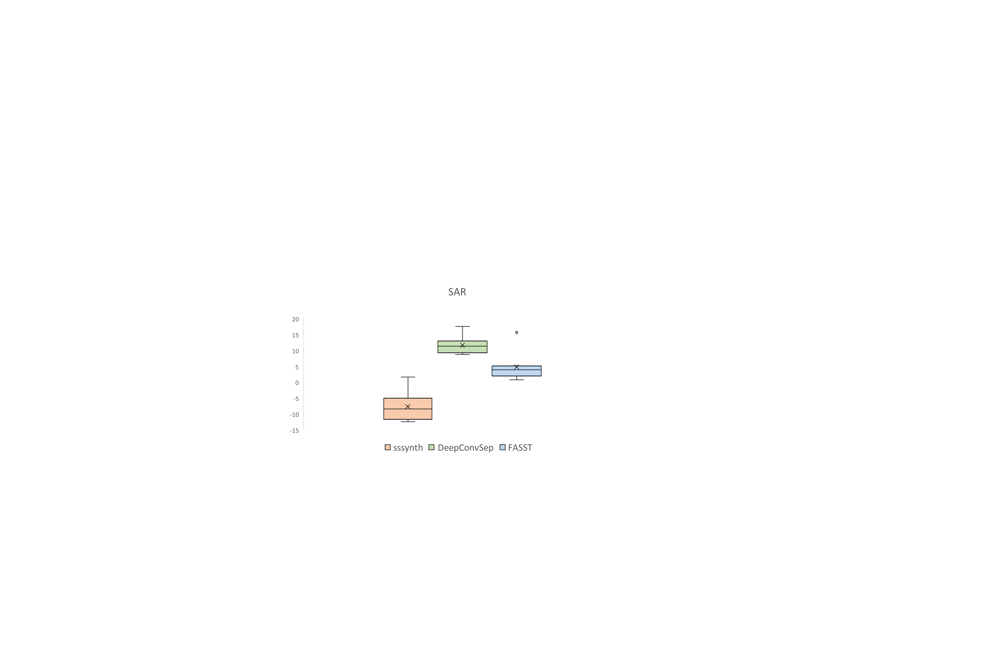

Examples Of Extraction With Real World Song (From MedleyDB)
MusicDelta_Reggae: The original mixture file
MusicDelta_Reggae: The original vocals file
MusicDelta_Reggae: Vocals extracted using sssynth file
The SDR metric from the BSS Eval toolkit for the three systems to be compared.

The SAR metric from the BSS Eval toolkit for the three systems to be compared.
[1] P. Chandna, M. Miron, J. Janer, and E. Gómez, “Monoaural audio source separation using deep convolutional neural networks” International Conference on Latent Variable Analysis and Signal Separation, 2017.
[2] A. Ozerov, E.Vincent, and F. Bim-bot, “A general flexible framework for the handling of prior information in audio source separation,”IEEETransactions on Audio, Speech, and Language Process-ing, vol. 20, no. 4, pp. 1118–1133, 2012.